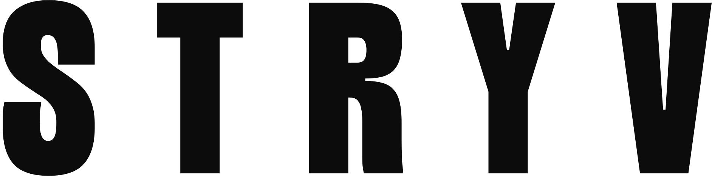

Docs
Handleidingen
Handleidingen en changelogs van de WordPress-plugins van STRYV.
Next-Gen Images
Zet afbeeldingen om naar WebP of AVIF met WebP-terugval.
Handleiding ·
Changelog:
next-gen-images/changelog/
RankPilot Pro
Alle SEO-functies van Yoast SEO Premium, plus vindbaarheid in ChatGPT, Perplexity, Gemini en Claude.
Handleiding ·
Changelog:
rankpilot-pro/changelog/